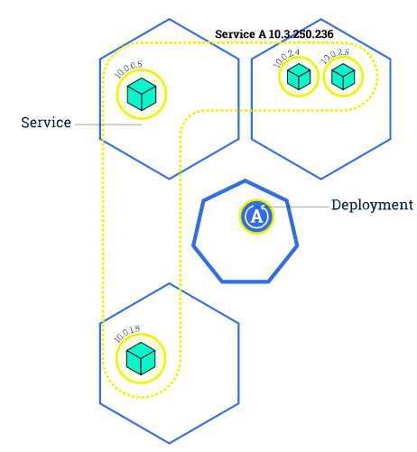
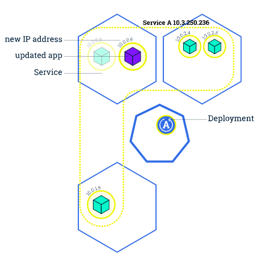

Kubernetes 201
扩展应用
通过修改Deployment中副本的数量（replicas），可以动态扩展或收缩应用：

这些自动扩展的容器会自动加入到service中，而收缩回收的容器也会自动从service中删除。
|
滚动升级
滚动升级（Rolling Update）通过逐个容器替代升级的方式来实现无中断的服务升级：
|




在滚动升级的过程中，如果发现了失败或者配置错误，还可以随时会滚回来：
|
需要注意的是，rolling-update只针对ReplicationController，不能直接用在deployment上。Deployment可以在spec中设置更新策略为RollingUpdate（默认就是RollingUpdate）：
|
而更新应用的话，就可以直接用kubectl set命令：
|
滚动升级的过程可以用rollout命令查看:
|
Deployment同样支持回滚：
|